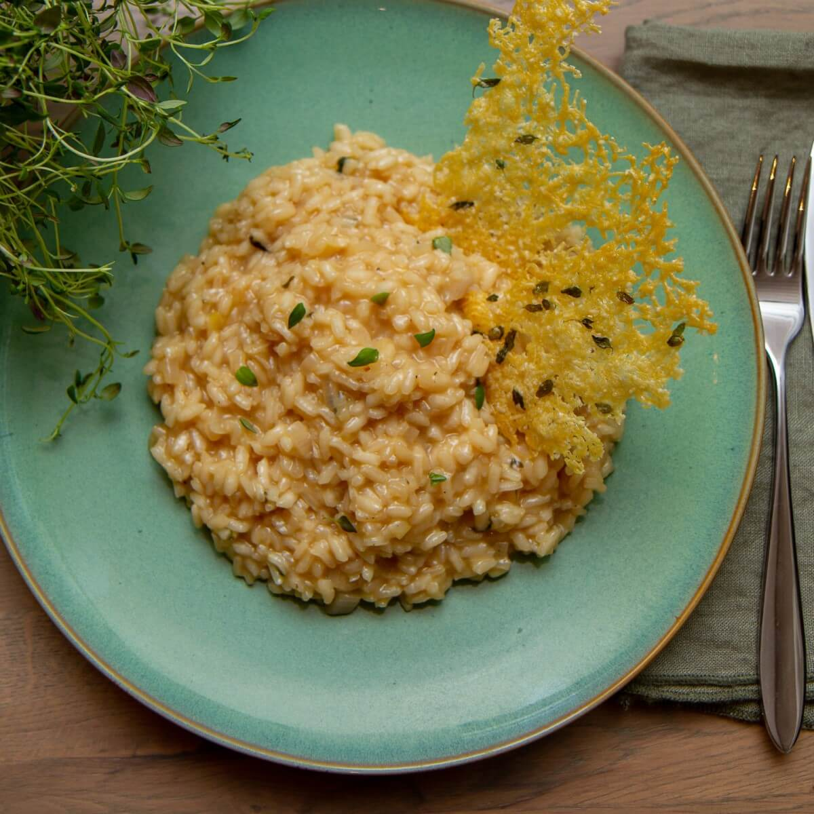

Risotto

Ingredients
- Onion
- Butter
- Risotto Rice
- White wine
- Cherry tomatoes
- Chicken stock
- Parmesan
- Heat oven to 200C/fan 180C/gas 6. Fry the bacon pieces in an ovenproof pan or casserole dish for 3-5 mins until golden and crisp.
Stir in the onion and butter and cook for 3-4 mins until soft.
Tip in the rice and mix well until coated.
Pour over the wine if using and cook for 2 mins until absorbed.
- Add the cherry tomatoes and the hot stock, then give the rice a quick stir.
Cover with a tightly fitting lid and bake for 18 mins until just cooked.
Stir through most of the parmesan and serve sprinkled with the remainder.
Home